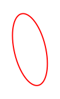
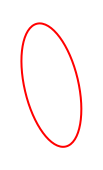

Graffiti NightLighting
For Camden Town
For Camden Town

Responsive and Reflective of Camden's Vibrant Culture
Relatively efficient lighting that is easily shapable
To save energy, proximity sensors can be used to gradually light up and dim sections of the graffiti depending on movement
Existing graffiti and local graffiti artists can help to inspire the designs of the NightLighting
 
